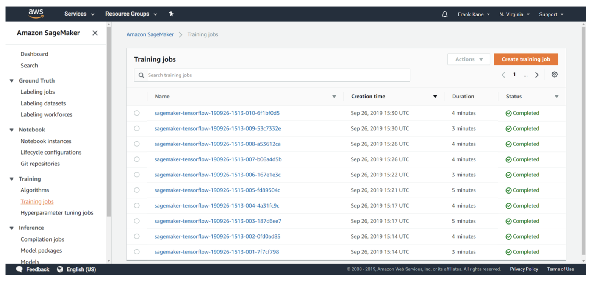
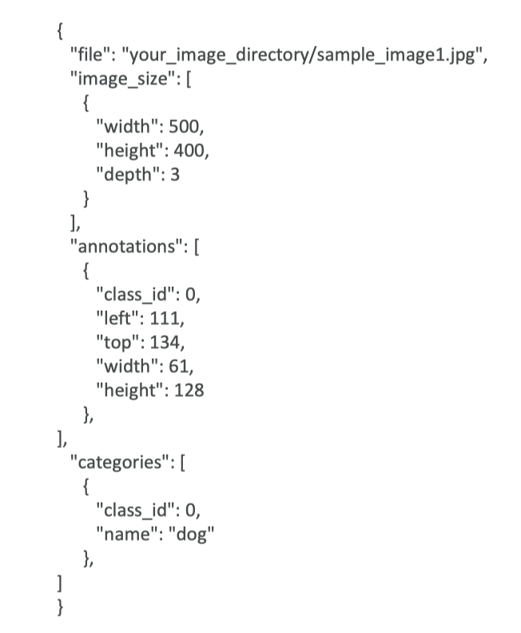
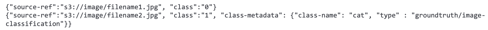
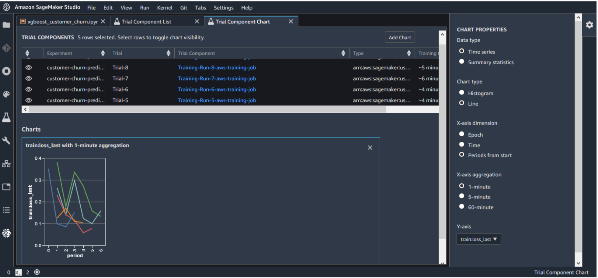

1. IntroductionSageMaker is built to handle the entire machine learning workflow.1.1. SageMaker Training & Deployment1.2. SageMaker NotebookSageMaker Notebooks can direct the process, so can the SageMaker console.Notebook Instances on EC2 are spun up from the console:S3 data accessScikit_learn, Spark, TensorflowWide variety of built-in modelsAbility to spin up training instancesAbility to deploy trained models for making predictions at scale

1.3. Data prep on SageMakerData usually comes from S3Ideal format varies with algorithm often it is RecordIO/Protobuf.Can also ingest fromAthena, EMR, Redshift, andAmazon Keyspaces DBApache Spark integrates with SageMaker.Scikit-learn, numpy, pandas all at your disposal within a notebook.1.4. Training on SageMakerCreate a training jobURL of S3 bucket with training dataML compute resourcesURL of S3 bucket for outputECR path to training codeTraining optionsBuilt-in training algorithmsSpark MLLibCustom Python Tensorflow/MXNet codeYour own Docker imageAlgorithm purchased from AWS marketplace1.5. Deploying Trained ModelsSave your trained model to S3Can deploy two ways:Persistent endpoint for making individual predictions on demandSageMaker Batch Transform to get predictions for an entire datasetLots of cool optionsInference Pipelines for more complex processingSageMaker Neo for deploying to edge devicesElastic Inference for accelerating deep learning modelsAutomatic scaling (increase # of endpoints as needed)1.6. SageMaker Built-in Algorithms1. Linear Learner2. XGBoost3. Seq2Seq4. DeepAR5. BlazingText6. Object2Vec7. Object Detection8. Image Classification9. Semantic Segmentation10. Random Cut Forest11. Neural Topic Model12. Latent Dirichlet Allocation (LDA)13. K-Nearest Neighbors (KNN)14. K-Means Clustering15. Principal Component Analysis (PCA)16. Factorization Machines (FM)17. IP Insights18. Reinforcement Learning19. Automatic Model Tuning20. Apache Spark
2. SageMaker: Linear Learner2.1. Whats it for?Linear regressionFit a line to your training dataPredictions based on that lineCan handle both regression (numeric) predictions and classification predictionsFor classification, a linear threshold function is used.Can do binary or multi-class.2.2. What training input does it expect?RecordIO-wrapped protobufFloat32 data only!CSVFirst column assumed to be the labelFile or Pipe mode both supported2.3. How is it used?PreprocessingTraining data must be normalized (so all features are weighted the same)Linear Learner can do this for you automaticallyInput data should be shuffledTrainingUses stochastic gradient descentChoose an optimization algorithm (Adam, AdaGrad, SGD, etc)Multiple models are optimized in parallelTune L1, L2 regularizationValidationMost optimal model is selected2.4. Important Hyperparametersbalance_multiclass_weightsGives each class equal importance in loss functionslearning_rate, mini_batch_sizel1RegularizationwdWeight decay (L2 regularization)2.5. Instance TypesTrainingSingle or multi-machine CPU or GPUMulti-GPU does not help
3. SageMaker: XGBoost3.1. Whats it for?eXtreme Gradient BoostingBoosted group of decision treesNew trees made to correct the errors of previous treesUses gradient descent to minimize loss as new trees are addedIts been winning a lot of Kaggle competitionsAnd its fast, tooCan be used for classificationAnd also for regressionUsing regression trees3.2. What training input does it expect?XGBoost is weird, since its not made for SageMaker. Its just open source XGBoostSo, it takes CSV or libsvminput.AWS recently extended it to accept recordIO-protobuf and Parquet as well.3.3. How is it used?Models are serialized/deserialized with PickleCan use as a framework within notebooksSagemaker.xgboostOr as a built-in SageMaker algorithm3.4. Important HyperparametersThere are a lot of them. A few:subsamplePrevents overfittingetaStep size shrinkage, prevents overfittinggammaMinimum loss reduction to create a partition; larger = more conservativealphaL1 regularization term; larger = more conservativelambdaL2 regularization term; larger = more conservativeeval_metricOptimize on AUC, error, rmseFor example, if you care about false positives more than accuracy, you might use AUC herescale_pos_weightAdjusts balance of positive and negative weightsHelpful for unbalanced classesMight set to sum(negative cases) / sum(positive cases)max_depthMax depth of the treeToo high and you may overfit3.5. Instance TypesUses CPUs only for multiple instance trainingIs memory-bound, not computeboundSo, M5 is a good choiceAs of XGBoost 1.2, single-instance GPU training is availableFor example P3Must set tree_method hyperparameter to gpu_histTrains more quickly and can be more cost effective.
4. Seq2Seq4.1. Whats it for?Input is a sequence of tokens, output is a sequence of tokensMachine TranslationText summarizationSpeech to textImplemented with RNNs and CNNs with attention4.2. What training input does it expect?RecordIO-ProtobufTokens must be integers (this is unusual, since most algorithms want floating point data.)Start with tokenized text filesConvert to protobuf using sample codePacks into integer tensors with vocabulary filesA lot like the TF/IDF lab we did earlier.Must provide training data, validation data, and vocabulary files.4.3. How is it used?Training for machine translation can take days, even on SageMakerPre-trained models are availableSee the example notebookPublic training datasets are available for specific translation tasks4.4. Important Hyperparametersbatch_sizeoptimizer_type (adam, sgd, rmsprop)learning_ratenum_layers_encodernum_layers_decoderCan optimize on:Accuracy* Vs. provided validation datasetBLEU score* Compares against multiple reference translationsPerplexity* Cross-entropy4.5. Instance TypesCan only use GPU instance types (P3 for example)Can only use a single machine for trainingBut can use multi-GPUs on one machine
5. DeepAR5.1. Whats it for?Forecasting one-dimensional time series dataUses RNNsAllows you to train the same model over several related time seriesFinds frequencies and seasonality5.2. What training input does it expect?JSON lines formatGzip or ParquetEach record must contain:Start: the starting time stampTarget: the time series valuesEach record can contain:dynamic_feat: dynamic features (such as, was a promotion applied to a product in a time series of product purchases)cat: categorical features5.3. How is it used?Always include entire time series for training, testing, and inferenceUse entire dataset as training set, remove last time points for testing. Evaluate on withheld values.Dont use very large values for prediction length (> 400)Train on many time series and not just one when possible5.4. Important Hyperparameterscontext_lengthNumber of time points the model sees before making a predictionCan be smaller than seasonalities; the model will lag one year anyhow.epochsmini_batch_sizelearning_ratenum_cells5.5. Instance TypesCan use CPU or GPUSingle or multi machineStart with CPU (C4.2xlarge, C4.4xlarge)Move up to GPU if necessaryOnly helps with larger modelsCPU-only for inferenceMay need larger instances for tuning
6. BlazingText6.1. Whats it for?Text classificationPredict labels for a sentenceUseful in web searches, information retrievalSupervisedWord2vecCreates a vector representation of wordsSemantically similar words are represented by vectors close to each otherThis is called a word embeddingIt is useful for NLP, but is not an NLP algorithm in itself!* Used in machine translation, sentiment analysisRemember it only works on individual words, not sentences or documents6.2. What training input does it expect?For supervised mode (text classification):One sentence per lineFirst word in the sentence is the string __label__ followed by the labelAlso, augmented manifest text formatWord2Vec just wants a text file with one training sentence per line.6.3. How is it used?Word2vec has multiple modesCBOW (Continuous Bag of Words)Skip-gramBatch skip-gram* Distributed computation over many CPU nodes6.4. Important HyperparametersWord2vec:mode (batch_skipgram, skipgram, cbow)learning_ratewindow_sizevector_dimnegative_samplesText classification:epochslearning_rateword_ngramsvector_dim6.5. Instance TypesFor cbow and skipgram, recommend a single ml.p3.2xlargeAny single CPU or single GPU instance will workFor batch_skipgram, can use single or multiple CPU instancesFor text classification, C5 recommended if less than 2GB training data. For larger data sets, use a single GPU instance (ml.p2.xlarge or ml.p3.2xlarge)
7. Object2Vec7.1. Whats it for?Remember word2vec from Blazing Text? Its like that, but arbitrary objectsIt creates low-dimensional dense embeddings of high-dimensional objectsIt is basically word2vec, generalized to handle things other than words.Compute nearest neighbors of objectsVisualize clustersGenre predictionRecommendations (similar items or users)7.2. What training input does it expect?Data must be tokenized into integersTraining data consists of pairs of tokens and/or sequences of tokensSentence sentenceLabels-sequence (genre to description?)Customer-customerProduct-productUser-item7.3. How is it used?Process data into JSON Lines and shuffle itTrain with two input channels, two encoders, and a comparatorEncoder choices:Average-pooled embeddingsCNNsBidirectional LSTMComparator is followed by a feed-forward neural network7.4. Important HyperparametersThe usual deep learning onesDropout, early stopping, epochs, learning rate, batch size, layers, activation function, optimizer, weight decayenc1_network, enc2_networkChoose hcnn, bilstm, pooled_embedding7.5. Instance TypesCan only train on a single machine (CPU or GPU, multi-GPU OK)Ml.m5.2xlargeMl.p2.xlargeIf needed, go up to ml.m5.4xlarge or ml.m5.12xlargeInference: use ml.p2.2xlargeUse INFERENCE_PREFERRED_MODE environment variable to optimize for encoder embeddings rather than classification or regression.
8. Object Detection8.1. Whats it for?Identify all objects in an image with bounding boxesDetects and classifies objects with a single deep neural networkClasses are accompanied by confidence scoresCan train from scratch, or use pretrained models based on ImageNet8.2. What training input does it expect?RecordIO or image format (jpg or png)With image format, supply a JSON file for annotation data for each image

8.3. How is it used?Takes an image as input, outputs all instances of objects in the image with categories and confidence scoresUses a CNN with the Single Shot multibox Detector (SSD) algorithmThe base CNN can be VGG-16 or ResNet-50Transfer learning mode / incremental trainingUse a pre-trained model for the base network weights, instead of random initial weightsUses flip, rescale, and jitter internally to avoid overfitting8.4. Important Hyperparametersmini_batch_sizelearning_rateOptimizersgd, adam, rmsprop, adadelta8.5. Instance TypesUse GPU instances for training (multi-GPU and multi-machine OK)Ml.p2.xlarge, ml.p2.8xlarge, ml.p2.16xlarge, ml.p3.2xlarge, ml.p3.8clarge, ml.p3.16xlargeUse CPU or CPU for inferenceC5, M5, P2, P3 all OK
9. Image Classification9.1. Whats it for?Assign one or more labels to an imageDoesnt tell you where objects are, just what objects are in the image9.2. What training input does it expect?Apache MXNet RecordIONot protobuf!This is for interoperability with other deep learning frameworks.Or, raw jpg or png imagesImage format requires .lst files to associate image index, class label, and path to the imageAugmented Manifest Image Format enables Pipe mode5 1 your_image_directory/train_img_dog1.jpg 1000 0 your_image_directory/train_img_cat1.jpg 22 1 your_image_directory/train_img_dog2.jpg

9.3. How is it used?ResNet CNN under the hoodFull training modeNetwork initialized with random weightsTransfer learning modeInitialized with pre-trained weightsThe top fully-connected layer is initialized with random weightsNetwork is fine-tuned with new training dataDefault image size is 3-channel 224x224 (ImageNets dataset)9.4. Important HyperparametersThe usual suspects for deep learningBatch size, learning rate, optimizerOptimizer-specific parametersWeight decay, beta 1,beta 2, eps, gamma9.5. Instance TypesGPU instances for training (P2, P3) Multi-GPU and multi-machine OK.CPU or GPU for inference (C4, P2, P3)
10. Semantic Segmentation10.1. Whats it for?Pixel-level object classificationDifferent from image classification that assigns labels to whole imagesDifferent from object detection that assigns labels to bounding boxesUseful for self-driving vehicles, medical imaging diagnostics, robot sensingProduces a segmentation mask10.2. What training input does it expect?JPG Images and PNG annotationsFor both training and validationLabel maps to describe annotationsAugmented manifest image format supported for Pipe mode.JPG images accepted for inference10.3. How is it used?Built on MXNet Gluon and Gluon CVChoice of 3 algorithms:Fully-Convolutional Network (FCN)Pyramid Scene Parsing (PSP)DeepLabV3Choice of backbones:ResNet50ResNet101Both trained on ImageNetIncremental training, or training from scratch, supported too10.4. Important HyperparametersEpochs, learning rate, batch size, optimizer, etcAlgorithmBackbone10.5. Instance TypesOnly GPU supported for training (P2 or P3) on a single machine onlySpecifically ml.p2.xlarge, ml.p2.8xlarge, ml.p2.16xlarge, ml.p3.2xlarge, ml.p3.8xlarge, or ml.p3.16xlargeInference on CPU (C5 or M5) or GPU (P2 or P3)
11. Random Cut Forest11.1. Whats it for?Anomaly detectionUnsupervisedDetect unexpected spikes in time series dataBreaks in periodicityUnclassifiable data pointsAssigns an anomaly score to each data pointBased on an algorithm developed by Amazon that they seem to be very proud of!11.2. What training input does it expect?RecordIO-protobuf or CSVCan use File or Pipe mode on eitherOptional test channel for computing accuracy, precision, recall, and F1 on labeled data (anomaly or not)11.3. How is it used?Creates a forest of trees where each tree is a partition of the training data; looks at expected change in complexity of the tree as a result of adding a point into itData is sampled randomlyThen trainedRCF shows up in Kinesis Analytics as well; it can work on streaming data too.11.4. Important Hyperparametersnum_treesIncreasing reduces noisenum_samples_per_treeShould be chosen such that 1/num_samples_per_tree approximates the ratio of anomalous to normal data11.5. Instance TypesDoes not take advantage of GPUsUse M4, C4, or C5 for trainingml.c5.xl for inference
12. Neural Topic Model12.1. Whats it for?Organize documents into topicsClassify or summarize documents based on topicsIts not just TF/IDFbike, car, train, mileage, and speed might classify a document as transportation for example (although it wouldnt know to call it that)UnsupervisedAlgorithm is Neural Variational Inference12.2. What training input does it expect?Four data channelstrain is requiredvalidation, test, and auxiliary optionalrecordIO-protobuf or CSVWords must be tokenized into integersEvery document must contain a count for every word in the vocabulary in CSVThe auxiliary channel is for the vocabularyFile or pipe mode12.3. How is it used?You define how many topics you wantThese topics are a latent representation based on top ranking wordsOne of two topic modeling algorithms in SageMaker you can try them both!12.4. Important HyperparametersLowering mini_batch_size and learning_rate can reduce validation lossAt expense of training timenum_topics12.5. Instance TypesGPU or CPUGPU recommended for trainingCPU OK for inferenceCPU is cheaper
13. LDA13.1. Whats it for?Latent Dirichlet AllocationAnother topic modeling algorithmNot deep learningUnsupervisedThe topics themselves are unlabeled; they are just groupings of documents with a shared subset of wordsCan be used for things other than wordsCluster customers based on purchasesHarmonic analysis in music13.2. What training input does it expect?Train channel, optional test channelrecordIO-protobuf or CSVEach document has counts for every word in vocabulary (in CSV format)Pipe mode only supported with recordIO13.3. How is it used?Unsupervised; generates however many topics you specifyOptional test channel can be used for scoring resultsPer-word log likelihoodFunctionally similar to NTM, but CPU-basedTherefore maybe cheaper / more efficient13.4. Important Hyperparametersnum_topicsalpha0Initial guess for concentration parameterSmaller values generate sparse topic mixturesLarger values (>1.0) produce uniform mixtures13.5. Instance TypesSingle-instance CPU training
14. KNN14.1. Whats it for?K-Nearest-NeighborsSimple classification or regression algorithmClassificationFind the K closest points to a sample point and return the most frequent labelRegressionFind the K closest points to a sample point and return the average value14.2. What training input does it expect?Train channel contains your dataTest channel emits accuracy or MSErecordIO-protobuf or CSV trainingFirst column is labelFile or pipe mode on either14.3. How is it used?Data is first sampledSageMaker includes a dimensionality reduction stageAvoid sparse data (curse of dimensionality)At cost of noise / accuracysign or fjlt methodsBuild an index for looking up neighborsSerialize the modelQuery the model for a given K14.4. Important Hyperparametersk!sample_size14.5. Instance TypesTraining on CPU or GPUMl.m5.2xlargeMl.p2.xlargeInferenceCPU for lower latencyGPU for higher throughput on large batches
15. K-Means15.1. Whats it for?Unsupervised clusteringDivide data into K groups, where members of a group are as similar as possible to each otherYou define what similar meansMeasured by Euclidean distanceWeb-scale K-Means clustering15.2. What training input does it expect?Train channel, optional testTrain ShardedByS3Key, test FullyReplicatedrecordIO-protobuf or CSVFile or Pipe on either15.3. How is it used?Every observation mapped to n-dimensional space (n = number of features)Works to optimize the center of K clustersextra cluster centers may be specified to improve accuracy (which end up getting reduced to k) K = k*xAlgorithm:Determine initial cluster centers* Random or k-means++ approach* K-means++ tries to make initial clusters far apartIterate over training data and calculate cluster centersReduce clusters from K to k* Using Lloyds method with kmeans++15.4. Important Hyperparametersk!Choosing K is trickyPlot within-cluster sum of squares as function of KUse elbow methodBasically optimize for tightness of clustersmini_batch_sizeextra_center_factorinit_method15.5. Instance TypesCPU or GPU, but CPU recommendedOnly one GPU per instance used on GPUSo use p*.xlarge if youre going to use GPU
16. PCA16.1. Whats it for?Principal Component AnalysisDimensionality reductionProject higher-dimensional data (lots of features) into lower-dimensional (like a 2D plot) while minimizing loss of informationThe reduced dimensions are called components* First component has largest possible variability* Second component has the next largestUnsupervised16.2. What training input does it expect?recordIO-protobuf or CSVFile or Pipe on either16.3. How is it used?Covariance matrix is created, then singular value decomposition (SVD)Two modesRegular* For sparse data and moderate number of observations and featuresRandomized* For large number of observations and features* Uses approximation algorithm16.4. Important Hyperparametersalgorithm_modesubtract_meanUnbias data16.5. Instance TypesGPU or CPUIt depends on the specifics of the input data
17. Factorization Machines17.1. Whats it for?Dealing with sparse dataClick predictionItem recommendationsSince an individual user doesnt interact with most pages / products the data is sparseSupervisedClassification or regressionLimited to pair-wise interactionse.g. user item17.2. What training input does it expect?recordIO-protobuf with float32Sparse data means CSV isnt practical17.3. How is it used?Finds factors we can use to predict a classification (click or not? Purchase or not?) or value (predicted rating?) given a matrix representing some pair of things (users & items?)Usually used in the context of recommender systems17.4. Important HyperparametersInitialization methods for bias, factors, and linear termsUniform, normal, or constantCan tune properties of each method17.5. Instance TypesCPU or GPUCPU recommendedGPU only works with dense data
18. IP Insight18.1. Whats it for?Unsupervised learning of IP address usage patternsIdentifies suspicious behavior from IP addressesIdentify logins from anomalous IPsIdentify accounts creating resources from anomalous IPs18.2. What training input does it expect?User names, account IDs can be fed in directly; no need to pre-processTraining channel, optional validation (computes AUC score)CSV onlyEntity, IP18.3. How is it used?Uses a neural network to learn latent vector representations of entities and IP addresses.Entities are hashed and embeddedNeed sufficiently large hash sizeAutomatically generates negative samples during training by randomly pairing entities and IPs18.4. Important Hyperparametersnum_entity_vectorsHash sizeSet to twice the number of unique entity identifiersvector_dimSize of embedding vectorsScales model sizeToo large results in overfittingepochs, learning_rate, batch_size, etc.18.5. Instance TypesCPU or GPUGPU recommendedMl.p3.2xlarge or higherCan use multiple GPUsSize of CPU instance depends on vector_dim and num_entity_vectors
19. Reinforcement Learning19.1. Q-LearningA specific implementation of reinforcement learningYou have:A set of environmental statessA set of possible actions in those states aA value of each state/actionQStart off with Q values of 0Explore the spaceAs bad things happen after a given state/action, reduce its QAs rewards happen after a given state/action, increase its QQ(s,a).(reward(s,a)+max(Q(s)- Q(s,a))) where s is the previous state, a is the previous action, s is the current state, and is the discount factor (set to 0.5 here).What are some state/actions here?Pac-man has a wall to the WestPac-man dies if he moves one step SouthPac-man just continues to live if going North or EastYou can look ahead more than one step by using a discount factor when computing Q (here s is previous state, s is current state)Q(s,a)discount(reward(s,a)+max(Q(s)- Q(s,a)))19.2. The exploration problemHow do we efficiently explore all of the possible states?Simple approach: always choose the action for a given state with the highest Q. If theres a tie, choose at random* But thats really inefficient, and you might miss a lot of paths that wayBetter way: introduce an epsilon term* If a random number is less than epsilon, dont follow the highest Q, but choose at random* That way, exploration never totally stops* Choosing epsilon can be tricky19.3. Markov Decision ProcessFrom Wikipedia: Markov decision processes (MDPs) provide a mathematical framework for modeling decision making in situations where outcomes are partly random and partly under the control of a decision maker.Sound familiar? MDPs are just a way to describe what we just did using mathematical notation.States are still described as s and sState transition functions are described as Pa(s,s)Our Q values are described as a reward functionRa(s,s)Even fancier words! An MDP is a discrete time stochastic control process.19.4. Reinforcement Learning in SageMakerUses a deep learning framework with Tensorflow and MXNetSupports Intel Coach and Ray Rllib toolkits.Custom, open-source, or commercial environments supported.MATLAB, SimulinkEnergyPlus, RoboSchool, PyBulletAmazon Sumerian, AWS RoboMaker19.5. Distributed Training with SageMaker RLCan distribute training and/or environment rolloutMulti-core and multi-instance19.6. Reinforcement Learning: Key TermsEnvironmentThe layout of the board / maze / etcStateWhere the player / pieces areActionMove in a given direction, etcRewardValue associated with the action from that stateObservationi.e., surroundings in a maze, state of chess board19.7. Reinforcement Learning: Hyperparameter TuningParameters of your choosing may be abstractedHyperparameter tuning in SageMaker can then optimize them19.8. Reinforcement Learning: Instance TypesNo specific guidance given in developer guideBut, its deep learning so GPUs are helpfulAnd we know it supports multiple instances and cores
20. Automated Model Tuning with SageMaker20.1. Hyperparameter tuningHow do you know the best values of learning rate, batch size, depth, etc?Often you have to experimentProblem blows up quickly when you have many different hyperparameters; need to try every combination of every possible value somehow, train a model, and evaluate it every time20.2. Automatic Model TuningDefine the hyperparameters you care about and the ranges you want to try, and the metrics you are optimizing forSageMaker spins up a HyperParameter Tuning Job that trains as many combinations as youll allowTraining instances are spun up as needed, potentially a lot of themThe set of hyperparameters producing the best results can then be deployed as a modelIt learns as it goes, so it doesnt have to try every possible combination20.3. Automatic Model Tuning: Best PracticesDont optimize too many hyperparameters at onceLimit your ranges to as small a range as possibleUse logarithmic scales when appropriateDont run too many training jobs concurrentlyThis limits how well the process can learn as it goesMake sure training jobs running on multiple instances report the correct objective metric in the end
21. SageMaker and Spark21.1. Integrating SageMaker and SparkPre-process data as normal with SparkGenerate DataFramesUse sagemaker-spark librarySageMakerEstimatorKMeans, PCA, XGBoostSageMakerModelNotebooks can use the SparkMagic (PySpark) kernelConnect notebook to a remote EMR cluster running Spark (or use Zeppelin)Training dataframe should have:A features column that is a vector of DoublesAn optional labels column of DoublesCall fit on your SageMakerEstimator to get a SageMakerModelCall transform on the SageMakerModel to make inferencesWorks with Spark Pipelines as well.21.2. Why bother?Allows you to combine preprocessing big data in Spark with training and inference in SageMaker.EMR and SageMaker are now very tightly integrated.
22. Modern SageMaker22.1. SageMaker StudioVisual IDE for machine learning!Integrates many of the features were about to cover.
Figure 1:SageMaker Studio
22.2. SageMaker NotebooksCreate and share Jupyter notebooks with SageMaker StudioSwitch between hardware configurations (no infrastructure to manage)
Figure 2:SageMaker Notebook
22.3. SageMaker ExperimentsOrganize, capture, compare, and search your ML jobs

22.4. SageMaker DebuggerSaves internal model state at periodical intervalsGradients / tensors over time as a model is trainedDefine rules for detecting unwanted conditions while trainingA debug job is run for each rule you configureLogs & fires a CloudWatch event when the rule is hitSageMaker Studio Debugger dashboardsAuto-generated training reportsBuilt-in rules:Monitor system bottlenecksProfile model framework operationsDebug model parametersSupported Frameworks & Algorithms:TensorflowPyTorchMXNetXGBoostSageMaker generic estimator (for use with custom training containers)Debugger APIs available in GitHubConstruct hooks & rules for CreateTrainingJob and DescribeTrainingJob APIsSMDebug client library lets you register hooks for accessing training data22.5. Even Newer SageMaker Debugger FeaturesSageMaker Debugger Insights DashboardDebugger ProfilerRuleProfilerReportHardware system metrics (CPUBottlenck, GPUMemoryIncrease, etc)Framework Metrics (MaxInitializationTime, OverallFrameworkMetrics, StepOutlier)Built-in actions to receive notifications or stop trainingStopTraining(), Email(), or SMS()In response to Debugger RulesSends notifications via SNSProfiling system resource usage and training22.6. SageMaker AutopilotAutomates:Algorithm selectionData preprocessingModel tuningAll infrastructureIt does all the trial & error for youMore broadly this is called AutoML22.7. SageMaker Autopilot workflowLoad data from S3 for trainingSelect your target column for predictionAutomatic model creationModel notebook is available for visibility & controlModel leaderboardRanked list of recommended modelsYou can pick oneDeploy & monitor the model, refine via notebook if needed22.8. SageMaker AutopilotCan add in human guidanceWith or without code in SageMaker Studio or AWS SDKsProblem types:Binary classificationMulticlass classificationRegressionAlgorithm Types:Linear LearnerXGBoostDeep Learning (MLPs)Data must be tabular CSV22.9. Autopilot ExplainabilityIntegrates with SageMaker ClarifyTransparency on how models arrive at predictionsFeature attributionUses SHAP Baselines / Shapley ValuesResearch from cooperative game theoryAssigns each feature an importance value for a given prediction
22.10. SageMaker Model MonitorGet alerts on quality deviations on your deployed models (via CloudWatch)Visualize data driftExample: loan model starts giving people more credit due to drifting or missing input featuresDetect anomalies & outliersDetect new featuresNo code needed22.11. SageMaker Model Monitor + ClarifyIntegrates with SageMaker ClarifySageMaker Clarify detects potential biasi.e., imbalances across different groups / ages / income bracketsWith ModelMonitor, you can monitor for bias and be alerted to new potential bias via CloudWatchSageMaker Clarify also helps explain model behavior* Understand which features contribute the most to your predictions22.12. Pre-training Bias Metrics in ClarifyClass Imbalance (CI)One facet (demographic group) has fewer training values than anotherDifference in Proportions of Labels (DPL)Imbalance of positive outcomes between facet valuesKullback-Leibler Divergence (KL), Jensen-Shannon Divergence(JS)How much outcome distributions of facets divergeLp-norm (LP)P-norm difference between distributions of outcomes from facetsTotal Variation Distance (TVD)L1-norm difference between distributions of outcomes from facetsKolmogorov-Smirnov (KS)Maximum divergence between outcomes in distributions from facetsConditional Demographic Disparity (CDD)Disparity of outcomes between facets as a whole, and by subgroups22.13. SageMaker Model MonitorData is stored in S3 and securedMonitoring jobs are scheduled via a Monitoring ScheduleMetrics are emitted to CloudWatchCloudWatch notifications can be used to trigger alarmsYoud then take corrective action (retrain the model, audit the data)Integrates with Tensorboard, QuickSight, TableauOr just visualize within SageMaker StudioMonitoring Types:Drift in data quality* Relative to a baseline you create* Quality is just statistical properties of the featuresDrift in model quality (accuracy, etc)* Works the same way with a model quality baseline* Can integrate with Ground Truth labelsBias driftFeature attribution driftBased on Normalized Discounted Cumulative Gain (NDCG) scoreThis compares feature ranking of training vs. live data22.14. Putting them together22.15. SageMaker: More New FeaturesSageMaker JumpStartOne-click models and algorithms from model zoosOver 150 open source models in NLP, object detections, image classification, etc.SageMaker Data WranglerImport / transform / analyze / export data within SageMaker StudioSageMaker Feature StoreFind, discover, and share features in StudioOnline (low latency) or offline (for training or batch inference) modesFeatures organized into Feature GroupsSageMaker Edge ManagerSoftware agent for edge devicesModel optimized with SageMaker NeoCollects and samples data for monitoring, labeling, retraining22.16. SageMaker CanvasNo-code machine learning for business analystsUpload csv data (csv only for now), select a column to predict, build it, and make predictionsCan also join datasetsClassification or regressionAutomatic data cleaningMissing valuesOutliersDuplicatesShare models & datasets with SageMaker Studio22.17. SageMaker Canvas Demo22.18. SageMaker Canvas: The Finer PointsLocal file uploading must be configured by your IT administrator.Set up an S3 bucket with appropriate CORS permissionsCan integrate with Okta SSOCanvas lives within a SageMaker Domain that must be manually updatedImport from Redshift can be set upTime series forecasting must be enabled via IAMCan run within a VPCPricing is $1.90/hr plus a charge based on number of training cells in a model22.19. SageMaker Training CompilerIntegrated into AWS Deep Learning Containers (DLCs)Cant bring your own containerCompile & optimize training jobs on GPU instancesCan accelerate training up to 50%Converts models into hardware-optimized instructionsTested with Hugging Face transformers library, or bring your own modelIncompatible with SageMaker distributed training librariesBest practices:Ensure GPU instances are used (ml.p3, ml.p4)PyTorch models must use PyTorch/XLAs model save functionEnable debug flag in compiler_config parameter to enable debugging